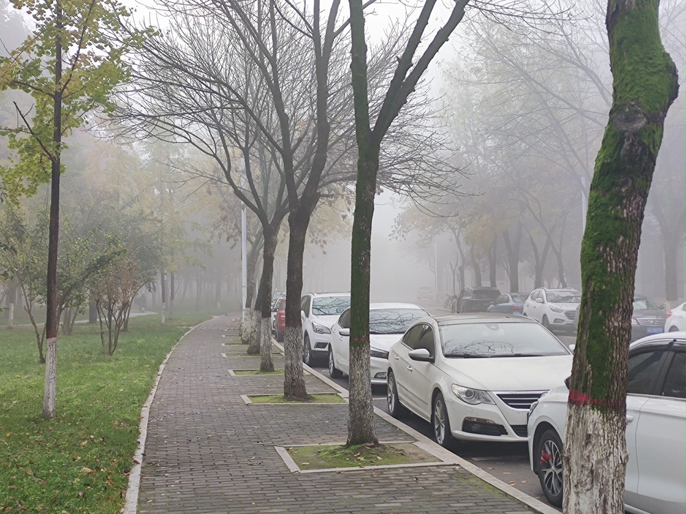
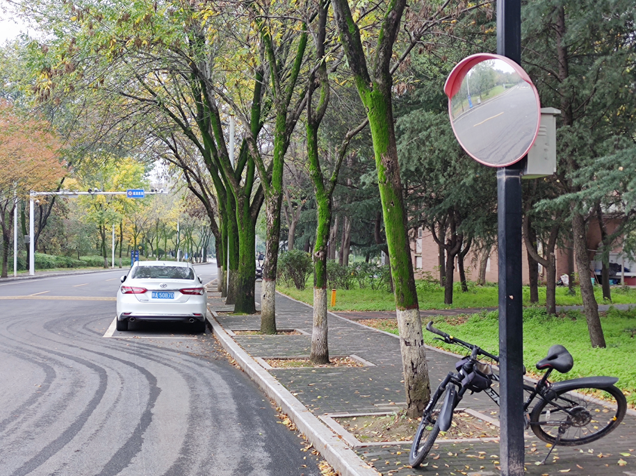

只是一些正确的废话和个人的偏见
思无邪的博客
分类
全部
(85)
日常
(48)
梦话
(25)
经济学
(7)
西方现代思想
(3)
记梦
(4)
冬至快乐
日常
冬至快乐！放个《葡萄成熟时》的链接。
2025年12月21日 22:51
思无邪
还不错的一天
日常
昨天是周五，还行，体育期末考完了。晚上在图书馆的放映室看了《哈尔的移动城堡》，这好像是我第三次还是第四次重温了，但依然没完全看懂，只能看个故事。
2025年12月20日 09:06
思无邪
最近吃馒头吃得很爽
日常
自从发现食堂有馒头之后，我就天天吃馒头，今天甚至中午也吃了馒头，很久没吃馒头后吃馒头真是太爽了，怎么吃都不腻，我都怀疑这食堂馒头是不是加罂粟或者大麻了（开个玩笑）。
2025年12月18日 23:13
思无邪
今天在食堂吃到了馒头
日常
今天晚上在食堂吃到了馒头，还是热的，真不错，让我这习惯于晚餐吃馒头的人终于在学校吃到了馒头，虽然是很普通的外面卖的那种馒头，但还是很爽，简直是这学期在学校吃过最好的一顿饭。
2025年12月15日 23:17
思无邪
做完实验了
日常
这两天天气很好，但是气温却还是很低，不像11月还有时候白天能到20度了，今天虽然是大晴天，但最高气温却只有5度。
2025年12月14日 22:42
思无邪
今天下雨了
日常
一场雨让气温骤降，下午的体育课也顺势取消了。说实话，我对体育课真是又爱又恨：理智上我知道这是目前唯一能强制我运动的机会，但身体却诚实地觉得“不用上课真爽”。哎，这糟糕的惰性心态啊。
2025年12月12日 21:33
思无邪
实验好多呜呜
日常
记梦
今晚去做了集成电路实验，身心俱疲，做完只觉得好累。
2025年12月11日 23:14
思无邪
考完《认知计算》了
日常
今天刚考完《认知计算》，试卷很平庸，考得也很平庸，突然想起下一届开始没有《认知计算》了，这门课成为历史了。突然想起来今天看到一个报告，说2025年全球顶尖大学调整专业的数量超过了过去十年的总和，意味着知识的保质期从十年缩短至三年。虽然不知道这个“意味着”的结论怎么得出来的，以及哪些大学才算是顶尖大学，以及怎么统计的调整专业的数量，但整体还是有点让…
2025年12月10日 23:04
思无邪
新的一周
日常
昨天晚上写博客写到很晚呢，语言里充满了仓促的感觉，一会儿去检查一遍错别字和标点有没有问题。
2025年12月08日 23:02
思无邪
今天晚上会断电，太好了
日常
今天把《舍友协议》修订了，真累啊，不过恐怕没有下一次了，以后我实在是懒得当这个编辑了，希望新的协议能有效吧，虽然我在最重要的一条修改里投了反对票。
2025年12月07日 23:26
思无邪
看完《疯狂动物城2》了
日常
今天上午把《疯狂动物城2》看完了。与《鬼灭之刃：无限城篇》相反，我认为《疯狂动物城2》应该在海报或宣传上加上一行“成年人请谨慎选择观看”。剧情感觉有点太过于“合家欢”了，像是升级版的《哪吒2》。可能是我对它期待太高了，或者是这个电影院的音响设备没有杜比的那么好，至少感觉上配乐远不及《无限城篇》带给我的震撼大。总体而言只是一部还可以的电影，但远不及…
2025年12月06日 16:44
思无邪
买了《疯狂动物城2》的电影票
日常
今天买了《疯狂动物城2》的电影票，周六上午去看。不过午餐估计得到时候凑合一顿了，我可不想再多花钱了。
2025年12月04日 23:16
思无邪
考完《操作系统》了
日常
今天考完《操作系统》了，整体考得不难，可以说比较简单了。下面要开始复习《认知计算》了，今天晚上老师在线上带大家做了集中复习，给我们好好地讲了讲重点。非常有用，需要仔细地复习。
2025年12月03日 22:49
思无邪
疲劳的周末
日常
今天是这周的最后一天，也是这个月的最后一天。大后天就要考操作系统了，md。
2025年11月30日 22:53
思无邪
无聊的一周
日常
这周够无聊的，虽然周一刚到西安，当时对西安的天气似乎有所感受，但呆了几天就习惯了，整体来讲最近天气不错，我还挺喜欢的，落叶让路上的景色显得更加的萧索，如果课间的时候路上人再少点就好了，不过我估计等我毕业都不可能实现了（实际上我觉得等我毕业20年都实现不了，虽然今年新生人口只有950万，不过我觉得对我来说还是太多了）。
2025年11月26日 22:32
思无邪
记火车上见闻
日常
11月21日晚10：47
2025年11月24日 23:03
思无邪
要回北京了
日常
还有七分钟我就要出发去火车站了，要回北京看牙。刚上完体育课，好累啊，一身臭汗，还得在火车上睡一宿，debuff叠满了，不过还好是下铺。
2025年11月21日 17:52
思无邪
一波刚平一波又起
日常
今天，《操作系统》结课了；周一的时候，《认知计算》也已结课。
2025年11月19日 22:00
思无邪
好累的一天
日常
今天感觉非常的疲惫。上午去看了鬼灭之刃的大电影，非常的好看，真是太值了。中午吃了比格，还不错，就是等位置的时间有点长。非常的奇怪的是最近的肚子似乎一直不是很好，连着两天拉肚子了，不知道是怎么回事。下午把操作系统的大报告的演示文稿做了。不过习概的报告还没有消息，也不知道习概组内其他成员对此有什么看法。
2025年11月15日 22:55
思无邪
又是多事的一周
日常
数竞考完了，考得相当一般啊。不过都已经过去了，我现在可以把精力放在一些更有趣的事情上，说实话有时候觉得竞赛会毁掉一些乐趣，不过当竞赛过去后，那乐趣总会回来。
2025年11月12日 22:32
思无邪
最近睡眠好差
日常
最近两天睡眠非常糟糕。
2025年11月07日 09:11
思无邪
买了《鬼灭之刃：无限城篇·第一章·猗窝座再袭》的电影票
日常
昨天得知《鬼灭之刃：无限城篇·第一章·猗窝座再袭》的电影终于要在大陆上映了，我真是“激动的心、颤抖的手”！没看“枪版”的决定实在太对了。
2025年11月05日 23:04
思无邪
我已经变成没有生活的人了，真糟糕
日常
嗨嗐嗨，负能量又来了。
2025年11月04日 23:00
思无邪
做了这样的梦吗
记梦
久违的
记梦
终于更新了，虽然这次的梦没什么意思，但是好久没有醒来后对梦境有比较清晰的记忆了，还是记录一下好了。
2025年11月03日 09:57
思无邪

突然发现十月已经过去了
日常
如题，突然发现已经11月2日了，时间过得真快。今天参加了久违的晚点名，内容是学校请来的一位学生，给我们讲解“就业指导大赛”。学校的逻辑很清晰：就业指导课程，显然不该被那些“已经就业”的人的经验所“污染”。就这样，我校成功实现了“就业指导”与“实际就业”的彻底隔离，确保学生们能在不受外界干扰的环境中，安心学习“指导”本身。
2025年11月02日 21:37
思无邪
感觉博客变成负能量发泄地了呜呜呜
日常
数学竞赛好难，好焦虑，今天学了插值法和简单的一阶构造类方法。感觉博客里这个所谓的“日常”的分类，已经几乎完全变成我负能量的发泄地了呢，呜呜呜。其实“日常”这个分类我是完全当日记来写的，因为这个博客网站根本没有人看，我也不想分享给别人，或许以后还可以加个密码系统，没有密码的知道网址也看不了。不过目前没有加密码的打算。
2025年10月29日 23:03
思无邪
无题
日常
疲劳的周末。
2025年10月26日 22:42
思无邪
国庆刷机有感（续）
日常
上次我反思，觉得刷机没给我带来多少好处。但在换回 MIUI 并使用了二十几天后，我发现自己显然错了，刷机是有好处的。
2025年10月22日 19:42
思无邪
记昨日思政课见闻
日常
昨天上习概，本身天气就下雨，十分寒冷，老师更是像得了更年期一样莫名奇妙的抱怨着。于是我让ai帮我写了两首歌行体的诗歌，具体课堂上发生了什么，就看诗歌吧。
2025年10月21日 16:17
思无邪
为何我无法忍受无聊了
日常
梦话
最近状态很差，似乎国庆之后就如此。
2025年10月19日 21:21
思无邪

无题
日常
今天早上去图书馆的路上发现因为长时间的下雨，树干上都长满了青苔。
2025年10月18日 15:42
思无邪
终于周末了
日常
终于周末了。
2025年10月17日 22:57
思无邪
无题
日常
今天晚上吃了一次食堂新开的粿条，也是我第一次吃粿条。我感觉就是宽的米粉，很光滑、很软，但没什么味道。汤的味道倒是挺足的，比较鲜，肉片给得还可以，不算太少，白菜和豆芽都很入味。整碗里头最不好吃的恐怕就是粿条了，应该是我吃不惯吧，排队的人每天都很多。
2025年10月16日 22:24
思无邪
好困啊
日常
好困啊，最近睡得不是很好，不知道为什么。宿舍的安静时间随着强制熄灯的加入似乎莫名奇妙的往后延了30分钟，室友协议明明写的是十一点安静熄灯，现在学校强制十一点半断电后似乎他们就默认改成十一点半了，唉。
2025年10月14日 09:27
思无邪
倦怠社会：我们为何在不断地努力中耗尽了自己
梦话
这是最近读了一些关于韩炳哲的书的解读而记录的。本篇博客首次采用了ai来写通稿，我来修改的方式，我先试试效果如何。
2025年10月13日 22:38
思无邪
又回到西安了
日常
又回到西安了。国庆假期一结束，校园里那种有点无聊又熟悉的日子又开始了。
2025年10月10日 22:51
思无邪
国庆刷机有感
日常
又到了一年一度的国庆，今年的国庆感觉格外寂寥，好像没有往年那么热闹了。不知道是我一个人这么觉得，还是大家都差不多，连商场都没怎么大张旗鼓地搞活动。难得今年国庆还和中秋连在了一起。
2025年10月03日 21:56
思无邪
多样性与效率
梦话
多样性和去掉多样性带来的好处可能是一样多的。
2025年09月03日 22:42
思无邪
好累啊
日常
这学期课好多啊，开学刚两天就很累了。博客更新的速度估计能一周一次就不错了。最近打算写一篇关于多样性和效率的还有一篇读《资治通鉴》的，尽量能写吧。
2025年09月02日 22:40
思无邪
开学了
日常
今天开学了
2025年08月31日 22:24
思无邪
古德哈特定律
经济学
为什么有些事情，不适合有明确的规则？
2025年08月25日 21:01
思无邪
我似乎只在我需要的时候思考哲学
日常
我总觉得自己平时想得挺多的，但每当真要写点什么的时候，却发现没什么东西可写。
2025年08月23日 20:59
思无邪
被驯服的爱情？
梦话
观刘擎教授驯服爱欲视频有感
2025年08月21日 20:58
思无邪
终于迁移完成了
日常
终于迁移完了，这次迁移有几个目的，主要是解决博客渲染慢的问题。同时增加了一些新功能
2025年08月21日 18:47
思无邪
我的第一篇 Quarto 文章
日常
這是一篇用來測試 Quarto 是否能正確渲染 LaTeX 數學公式的文章。當您使用
quarto preview
預覽時，網頁會通過 MathJax 函式庫將這些 LaTeX 語法轉換為漂亮的數學符號。
2025年08月21日 15:40
思无邪
庆祝六级的通过，并试试博客是否正常
日常
上次的重启博客发现read more功能失效了，只好直接把文字显示出来，这次试试是够正常。 话说六级过了，很开心，似乎成了我最近比较开心的一件事。让人重拾信心。 希望博客也正常了。
2025年08月20日 00:00
思无邪
迁移
日常
明天大概会把博客从hexo架构换成Quarto架构，希望能顺利。主要的麻烦在于如何把这写旧的博客迁移过去。
2025年08月20日 00:00
思无邪
重启
梦话
好久没写博客了，原因只是没想出来写啥
2025年08月04日 00:00
思无邪
无题
梦话
在公共空间里，什么样的规则是合理的？什么样的规则是好的？
2025年05月25日 00:00
思无邪
2025-4-29
日常
最近有些忙碌，好久没写博客了，赶紧来写一写。今天做了英语presentation，被评价为perfect job，让我对自己的英语学习能力产生了很大的信心。嘶，似乎除了这个好像也没什么值得记录的事了，真奇怪，最近挺忙的，不知道在忙啥。
2025年04月29日 00:00
思无邪
经济学：人们卖弄的经济学原理通常只有50%是正确的
经济学
今天换了本经济学的书，感觉这一本更好一些。回到标题，经济学之外何尝不是这样呢？
2025年04月29日 00:00
思无邪
科斯定律：社会成本问题
经济学
风俗习惯和道德规范为何重要？
2025年04月19日 00:00
思无邪
寻租
经济学
为什么每个国家的人都很忙，但有的国家富裕，有的国家贫穷。
2025年04月19日 00:00
思无邪
成本：放弃的最大价值
经济学
别只盯着钱
2025年04月17日 00:00
思无邪
歧视：稀缺的必然结果
经济学
歧视
\(or\)
选择？
2025年04月16日 00:00
思无邪
新篇章：经济学，芜湖
经济学
为什么商业是最大的慈善？
2025年04月15日 00:00
思无邪
伯林：是否存在最高的价值？
西方现代思想
我们在做出决断时到底牺牲了什么？
2025年04月11日 00:00
思无邪
2025-4-11
日常
嗓子哑了，不过打打字还是没啥问题的。今天天气不错，虽然是阴天，却一点也不闷，小风很凉爽，但看着似乎要下雨。刚才在来图书馆的路上，看见路两旁的樱花树的花瓣一直在被吹落，像动漫里一样，不过花瓣看起来可没动画里那么大，不仔细看我还以为是柳絮。也有一整朵樱花掉下来的，正好砸我脚边上，吓我一跳。但不知道为啥稍远一点就看不到整朵的樱花掉下来了，可能掉得太快还…
2025年04月11日 00:00
思无邪
萨特：虚无带来自由
西方现代思想
人的存在和物的存在究竟有什么区别？
2025年04月09日 00:00
思无邪
尼采：只有当你全部否定我的时候才是真正理解了我
西方现代思想
如何面对人生的虚无
2025年04月08日 00:00
思无邪
2025-4-7
日常
今天非常疲惫，而且拉肚子了，明天再写好了。不管今天发现了一本非常好的书，打算可以好好的写一写，对我理解现在的自己有很大帮助。
2025年04月07日 00:00
思无邪
虚无感：我希望我的生活能自圆其说
梦话
虚无感，名词，词典里没有解释，美学上指审美主体因对世界或特定对象以及自身存在的证据缺失、无根基、无归宿而体验到极其失落的感受。
2025年04月06日 00:00
思无邪
善恶：其实与人性无关
梦话
善恶，形容词，是善良与邪恶的组合词，常被用来形容道德，但一个社会的善恶水平却往往与人性无关。
2025年04月02日 00:00
思无邪
2025-4-1
日常
愚人节快乐，感冒未好，身体不适。
2025年04月01日 00:00
思无邪
BYD西安：这辈子不想再来的城市
日常
这篇blog是纯粹的发泄，内容含有粗鄙之语，容易引起不适，请谨慎观看。 妈的，西安这个城市，太让我失望了。
2025年03月31日 00:00
思无邪
亲密关系/孤独：是否只有两种选择
梦话
亲密关系，名词，顾名思义，非常亲密的关系，常指恋人、夫妻，但近年来越来越多的年轻人似乎不愿意进入亲密关系。
2025年03月30日 00:00
思无邪
健康：人们并不真的追求
梦话
健康，名词或形容词，指一个人在精神和身体各方面都处于良好的状态，但是人们也总是只在它出问题时才想起来。
2025年03月27日 00:00
思无邪
感动：别忘了保持警惕
梦话
感动，动词，指情绪受到外界刺激是产生的波动，本质是动摇。
2025年03月26日 00:00
思无邪
2025-3-26
日常
今天西安沙尘暴了，byd好的天气不学，把北京傻逼的沙尘暴给我复制过来了。一整天都非常呛。
2025年03月26日 00:00
思无邪
确定性：大部分时候只是一种幻想
梦话
确定性，名词，一种非常吸引人的、对未来的幻想。
2025年03月25日 00:00
思无邪
幸福：是否一定需要经历苦难
梦话
幸福，名词，许多哲学家都试图定义过的一种美好感觉。 今天是国际幸福日，所以借此机会，正好也不用想选题了，直接写点关于幸福的想法，不过我对幸福的思考非常少，可能没有什么好点子（其实之前的那些讨论也没什么好点子）。
2025年03月20日 00:00
思无邪
关于投射
梦话
投射，动词，指类似“望子成龙”等将自己的情感需要或者愿望强加于他人的现象，与共情相反。 前几天我讨论过“倾听”这个词，昨天晚上和同学在微信上聊天。我发现我根本做不到所谓”倾听“的境界。其实在聊天的过程中，我一直在聊自己，也就是今天想要说的”投射“。这种对话当然是很拧巴的，很快我也意识到了，不过当时大概心情不咋地或者之类的，也没有改正自己的行为。
2025年03月19日 00:00
思无邪
关于数码产品
梦话
数码产品，名词，一种人为创造的需求，正在演化成新时代宗教。
2025年03月17日 00:00
思无邪
无题
梦话
今日不知道谈什么，所以只好无题。
2025年03月16日 00:00
思无邪
关于倾听
梦话
倾听，名词，沉默的近义词，一种有效的人际交往方式，唯一的缺点是很难做到。
2025年03月15日 00:00
思无邪
2025.3.15
记梦
一个荒诞的梦
2025年03月15日 00:00
思无邪
乐观厌世
梦话
乐观厌世，名词，佛教用语。
2025年03月15日 00:00
思无邪
关于人生目标
梦话
人生目标，名词，可以理解为自己喜欢做的事情，但其实更像是脑门前悬着的那根萝卜。
2025年03月12日 00:00
思无邪
关于品味
梦话
品味，名词，众多烦恼中的一个
2025年03月10日 00:00
思无邪
生命与死亡的意义
梦话
思考自杀的意义其实就是在另一个方向思考人生的意义。 死亡并不带来除了尸体以外的其他任何的东西，所以如果想知道人生的意义，最简单的办法是先活着再说，不过活着并不代表有一天你会知道人生的意义是什么，毕竟常见的情况是，当你觉得你知道它是啥的时候，他又变了。从其他角度来说，死亡是迟早的，无法避免也无法选择的，所以某种意义上，死亡既单调又无聊，如果想干点…
2025年03月09日 00:00
思无邪
焦虑、自律和专注
梦话
今天讨论标题里的三个名词。 焦虑，名词，往往被理解为一种心理状态，但其实更像一个人，也就是另一个你自己。…
2025年03月09日 00:00
思无邪
只剩下套子的人
梦话
讨论社会问题时，总是可以听到两种论调，一种是“社会应该如何如何，明明可以如何如何”；而另一种想必也是显然的，就是“社会就是如何如何，要尊重现实如何如何”。倘若讨论的双方还有些体面，大抵也不会沦落到互相质问“你以为你是谁”的地步。…
2025年03月07日 00:00
思无邪
关于现代爱情的有趣比喻
梦话
近年来爱情似乎越来越稀缺，人们大多愿意以功利化的视角来看待爱情，常见的做法是把爱情拆成各个部分，然后每一个部分都可以找到一个很好的“平替”，似乎这样就可以彻底替代掉亲密关系，万事大吉了。但我那天看到了一个比喻，非常有趣，我觉得也非常有道理。他说爱情其实更像彩虹，你把彩虹每一个颜色都拆出来之后，每个颜色都找个更好的平替，也无法取代彩虹本身合在一起时…
2025年03月04日 00:00
思无邪
如果人生无意义，我该如何度过这一生
梦话
“当我沉默着的时候，我觉得充实；我将开口，同时感到空虚” ——鲁迅
2025年03月04日 00:00
思无邪
2025.3.1
记梦
梦见去了海底
2025年03月01日 00:00
思无邪
无匹配项